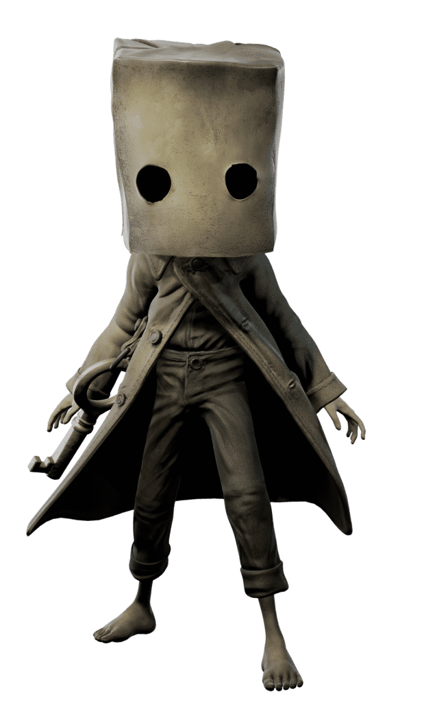
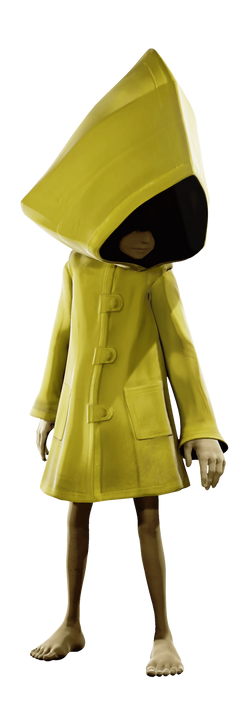
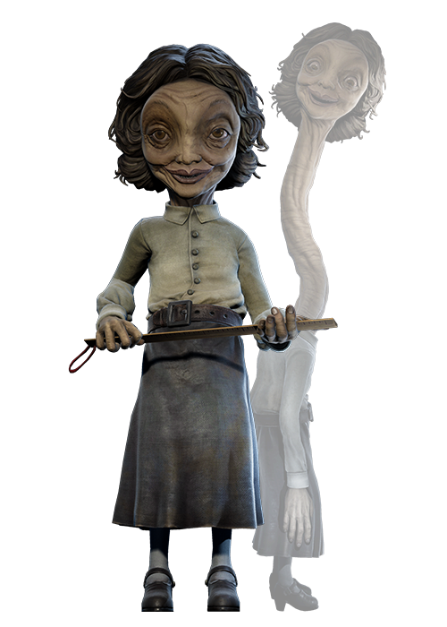
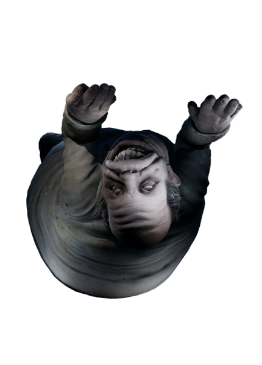
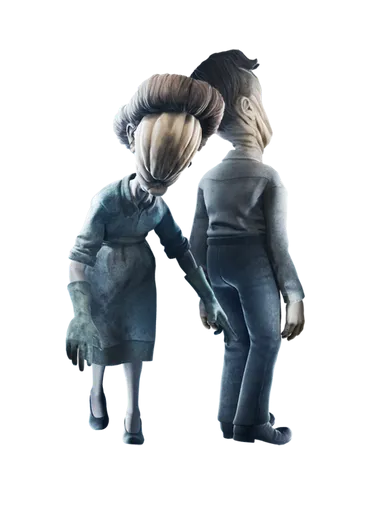

As the first chapter of the main work, the main pursuer is a hunter. It's not inside the city, it's outside. Instead of having no tutorial chapters, the early part of this chapter serves as a tutorial. Therefore, there are many parts that seem to have egotized the prison chapter of the previous work.
CHARACTER

MONO
Gender : the masculine gender
special note : Psychic powers
When the world is crumbling under the relentless pulse of the Signal Tower, Mono takes refuge wherever he can.
His thin paper mask is a comfort to forget that the outside world hates him and wants him to fail, but he cannot hide forever.
He wears a coat and a bread bag with a hole in his head. The bag he is wearing can be used by picking up a hat and others off the map. However, I still can't see well. But in the course of fighting a dry man, the bag of bread is taken off. From this point on, the player will not be allowed to put a hat on Mono.
For the first time in the Little Nightmare series, she has a unique superpower from the beginning of the main film. Official settings suggest he was also an important figure at the Signal Tower.

SIX
Gender : the female sex
special note : Hunger
age : Nine years old
Stuck in the abyss of the darkest throats, the hungry, lonely world of Six is full of danger.
Ordinary children would have given up already, but six is different. She wore a smart, strong, and cute yellow raincoat.
It belongs somewhere else.(Part 1)
Six who woke up from an unknown world must learn to trust others to survive.
Six already seems to be no ordinary child, but he is not.(Part 2)

THE HUNTER
The hunter, armed with a flashlight and an old shotgun, strode the wild with cold ambition,
Searching for the smell of the game, collecting new trophies to hang on the creaking walls of the cabin.
It's the first. wear a bag with a hole in the eye Considering the atmosphere and pitfalls of the forest or the background of the house in which you live, it seems to serve as a gatekeeper to keep outsiders from entering the city. They seem to take stuffed animals as a hobby. Not only animals but also humans are hunted and stuffed.

THE TEACHER
Bad manners in the teacher's classroom will not be tolerated, and nothing can avoid her cold, crooked gaze.
In her domain, children should be seen but not heard, and if someone makes a sound, he will never be seen again.
The first person to meet in the pale city and the main pursuer of the school. She is an old-looking woman with long arms that reach her calves. To lead and educate bullies. He seems to be a very knowledgeable scholar, such as making and researching biological samples himself, playing the piano and composing songs, and strictly teaching bullies one by one in the classroom, but he does not seem to be a good figure for an educator.
BULLIES
Bullies, proof that not all children are innocent, are not tragic beings, have no cruel parents to blame, nor do they secretly crave for your friendship.
They're just bullies, and if you don't hit them first, they'll get hit.
the students at school They look like children about the same size as Six and Mono, but their heads are made of pottery. In the Little Nightmare World Pavilion, adults are usually seen as villains and children as good, while these are clearly villains, even though they are shaped like children, as shown in the above description. Given that he is close to a doll, not a human being, and that he lives by some kind of magic, it is assumed that someone made a doll that lives with bad intentions.

PATIENTS
Patients can't stand themselves. They hate me looking back at myself in the mirror.
Seeing only the ugliness and faults of their nature, they implore the doctor to cure them with his magic and make them perfect again.
Hospital maps are the main enemy of some sections. Patients who have been treated by doctors are not complete human beings, but strange creatures (?) created by combining human body parts, mannequins' arms and legs, and other hooks. If you look closely, the cross section of the cut body is realistic, and the body and other parts that appear to be dead are still visible, indicating that they are not mannequins but modified bodies.

THE DOCTOR
The doctor values perfection, and he won't let anything interfere with his life's work.
It may be too late to hear the doctor coming, with his eager patients rattling down the hall.
Only then will you be able to look up to him.
He is the main follower of the hospital map. It is quite a creepy impression because it has pale skin and eyes behind it, and its gums are also exposed, and it has a lot of fat on its back, especially because of its considerable obesity like the guests in the previous work. When you see a giant caterpillar crawling in a game where even the clothes get too tight, it feels like a giant caterpillar is crawling. Unusually, the chin is quite small for the head, hanging from the ceiling. Every time I move, something like powder keeps falling from the ceiling of the hospital. While hanging from the ceiling, he also crawls down to the limited floor of the chase.

VIEWERS
Viewers live their lives on the screen, and they can't even imagine a world without it.
All those fantastic colors, sounds, and forms dance in front of viewers' eyes, mesmerizing, soothing and fattening them. Radio waves give them everything they need, and in return they demand only one thing...
the citizens of a city He appears in front of Mono and Six who left the hospital, but there is no big threat because they are all distracted by TV. They are really crazy about TV, so they watch TV in the bathroom, and sometimes they bang their heads on TV, and sometimes fall off trying to watch TV on the other side. The TV viewers are watching has bright melodies, but only white noise appears on the screen. However, since the description refers to fantastic colors and shapes, it seems that something is not visible from the child's perspective but only from the adult's perspective.

THE THIN MEN
With the constant tingle of radio waves gripping the broadcast,
The skinny man continues his endless journey through his desolate living quarters, captivating shadows, searching for something.
The owner of the silhouette that appeared on TV at the end of the previous film, DLC. It was presumed to be the final boss, perhaps because the illustration of the original work seemed to have been described in a large way in the center as a man with a fairly thin, pale face and a suit, as its name suggests. You can't see your face well in the game, but you look old when you look at the model. He is also relatively normal, quiet and quiet compared to other pursuers, teleporting and chasing for a short distance. Paintings of a black man wearing a hat that seems to describe him are found in many places.
STORY
The Wildness
The School
The first place to enter after arriving in the city by door crossing the sea. Teachers and bullies appear as main enemies. It is also the first chapter where you can attack the enemy by swinging your own weapon after dodging every time.
The Hospital
A place where doctors and patients appear. Given that the hospital chapter has the darkest sections, it seems to imply the situation inside the hospital. It is divided into the upper and lower floors, with patients appearing on the upper floors and doctors appearing on the lower floors. Although it is simply described as a hospital, the hidden room with bodies in the bathtub is surrounded by soft cushions that are commonly found in mental hospitals, and the atmosphere of an old-fashioned mental hospital is excercised by electric chairs used for electrical treatment or iron gates that are only seen in prisons.
The Pale City
A downtown area where the black tower is located, featuring viewers and skinny men. When you first enter the city, you can see something falling from afar, and it is highly likely that you are a viewer based on the situation such as sound and shape. Viewers who were looking at the black tower from the railing on the roof of the building during the process can see themselves stepping on their feet and falling down.
The Black Tower
Usually called Signal Tower, but its official name is Black Tower. As the final boss stage, the interior is very intertwined and has a lot of doors. Here comes a strangely changed six as a boss.